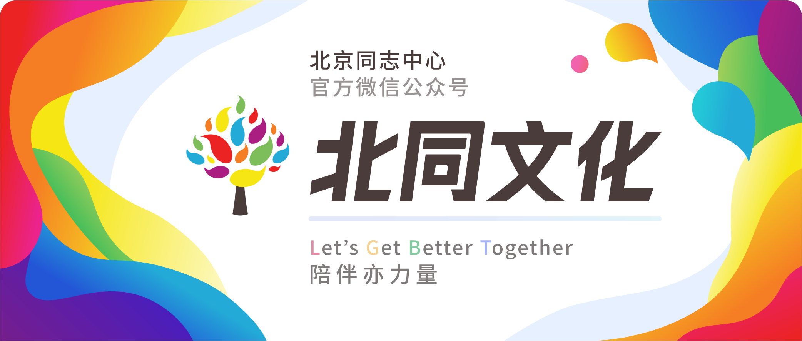

我们离“不被扭转”还有多远——中国的LGBT去病化进程
以下文章来源于北同文化 ，作者尊重多元合作
北京同志中心官方微信。北京同志中心成立于2008年2月14日，作为一家民间公益组织，通过在北京地区提供社区服务和开展倡导活动来增强中国同志（LGBT）人群的自我认同；推动同志运动，消除歧视，实现平等；并促进多元文化和公民社会的发展。

我叫小A，是个生长在中国的普通人。“扭转治疗”这个词，曾经离我很远，然后又离我很近，后来它再次远离了我。
我希望它永远不要再接近我。
以下是我的故事：
2001年
我呱呱坠地。这一年，中国精神学会常委会重新修改的《中国精神障碍诊断与分类标准第三册》正式将同性恋从精神疾病分类中删除。我的父母并没有留意这个新闻，也许在他们看来，同性恋怎么样和他们一点儿关系也没有。
2006年
我上小学了。这一年，国际性少数人权会议发布了《蒙特利尔宣言》，号召世界各国将每年的5月17日作为“国际不再恐同日”，以唤醒人们关注因为恐惧同性恋、歧视性倾向而产生的一切生理和精神暴力以及不公平对待。整日沉浸在与小伙伴玩耍的快乐中的我对此一无所知。
2014年
这一年发生了一件令我又兴奋又紧张的事：我喜欢上了一个人，而且这个人和我是同性。“我怎么会喜欢同性呢？我会不会有什么问题？”
带着这些疑问我查阅了很多资料。在真真假假的消息里，我看到一条新闻：一位叫阿振的小哥哥因受到同性恋扭转治疗而将一家叫心语飘香的心理诊所告上法庭并胜诉，法院在判决书里明确提到“同性恋并非精神疾病”。我内心松了一口气，但最终没能鼓起勇气向那个人表白。
2015年
这一年，女大学生秋白因教科书污名化同性恋而将教育部告上了法庭。那时的我已经了解到了在2001年我国就已经将同性恋去病化。我惊讶于号称“权威”的教科书上居然对LGBT群体有如此之多的偏见，于是发了一条出柜并支持秋白的朋友圈。
当天晚上我父母和我大吵了一架，他们说：“你这是有病，你需要去治疗！”过去的新闻中报道的扭转治疗的可怕景象一下子涌入我的脑海，吓得我说不出话来。幸好，他们最终没有把我送去任何机构。
2017年
2年前的那次吵架让我家的家庭氛围变得压抑了许多，这一年，秋白的败诉也让我感到内心灰暗。但还是发生了两件令我振奋的事：一件是，一名叫西西的女生接下了秋白的接力棒，将另一本恐同教科书告上了法庭；另一件是，河南驻马店的一位男同志余先生起诉了对他进行扭转治疗的精神病院，并获得了胜诉。
然而，在国内违法对LGBT群体进行扭转治疗的机构还有100多家，我不知道他们会不会被一一曝光出来，受到惩治。
2019年
我终于离开了家来到外地上大学。在上海的街头我看到了三辆红色的货车，每辆车上都有格外醒目的黑色标语。街边的人告诉我，这是艺术家武老白策划的以反对扭转治疗为主题的行为艺术。
我带着敬佩之心把这件事发到朋友圈里，很多朋友给我点了赞，唯独学校的心理老师留言说“你要不要去看看医生？”我想了想，怼了回去。
2020年
今年夏天，联合国发布了反对扭转治疗的独立专家报告，呼吁世界各国采取措施禁止扭转治疗。这个消息让我非常激动，这是联合国第一次就扭转治疗问题作出专题的报告和呼吁。但几个月后又传来了坏消息，西西诉恐同教材案一审败诉，我看到了最糟糕的判决结果：法院认为“同性恋是心理障碍”的表述非“知识性差错”。这意味着法院不承认2001年的同性恋去病化结果。
我开始意识到，我国的LGBT去病化并不是一场在2001年就已经宣告胜利的战役，而是一场持续了几十年仍未竟的事业……
以上是由小编虚构出来的小A的前19年人生，它不取材于任何人的真实经历，但许多人或许都能从中多少看到自己生活的影子。“LGBT是病”的观点一直在打扰我们的生活，因为中国的LGBT去病化还处于正在进行时，有太多机构和个人不愿承认去病化的成果，不过，还有更多的力量在推动LGBT去病化的发展与落实。这段进行中的历史离我们并不遥远，很多事情都在我们的成长过程中悄然发生着，但也许我们从未了解过去病化的每一步是如何迈出的。
因此，在这一次的“彩虹系列讲座·同运史”活动中，我们邀请到了北京同志中心的执行主任辛颖（小铁）。从2012年起，小铁就开始带领北京同志中心关注我国的LGBT去病化，创建了全国LGBT友善咨询师培训，并开展LGBT去病化倡导。我们请她从自己的经历与见闻出发，为大家讲述中国的LGBT去病化进程。
嘉宾介绍
辛颖（小铁）
现任北京同志中心执行主任、前武汉rainbow策划总监；北京同志中心性少数人群友善心理咨询师培训项目创始人；2013年9月第11届全国精神医学学术会议“寻找中国好医师”倡导发起人。积极参与中国同志去病理化工作，发起《中国同志心理健康调查报告》，曾代表中心参与世界银行的NGO会议，曾受邀参与2016年日本横滨心理学大会, 分享中国同志去病理化的历史以及同志心理健康状况。
活动时间
2020年9月26日
14:00-15:30
活动流程
14:00-15:00主持介绍&嘉宾分享
15:00-15:30 互动问答
活动平台
腾讯会议APP
（手机版或电脑版均可）
请提前下载
报名费用
20元
报名方式
长按扫描下方二维码或点击“阅读原文”进行报名
报名成功后请不要关闭页面，可直接扫码进入活动群喔～
联合推广
西安Relax同学社
关注西北地区性别弱势青年，促进性别弱势青年的权益平等、身份自由表达；实践身体自主权；推动公众具备多元性别视角，营造性别平等，无歧视、无暴力的友善环境。
彩虹暴力终结所
彩虹暴力终结所在2016年成立，是国内第一家为性和性别少数伙伴提供性别暴力直接干预服务的机构。致力于为正在遭受暴力和歧视的性/别少数人士提供专业的法律和社工服务，同时开展多种社群活动以提高大家的反暴力意识、增强直接服务者的干预技能，以促进多方合作。
北京亲友会
同性恋亲友会（英文简称PFLAG China，意为中国男女同性恋者的父母、家人和朋友）成立于2008年，为中国的LGBT群体和亲友提供支持服务。同性恋亲友会是一个独立的民间组织，不属于任何组织的分部。
跨儿心理小组
跨儿心理小组，是一个专注于跨儿（跨性别者与非性别常规者）心理健康的公益团队。小组致力于通过社群服务、社群培力、调查研究、公众教育与社会倡导等工作，改善跨儿的福祉，促进社会的性别多元平等。
酷儿论坛
杭州酷儿论坛致力于为杭州及周边地区学生性少数人群提供一个多元、健康、平等的环境，促进自我认同和社会认可。

彩虹系列讲座
「彩虹系列讲座」是北京同志中心社区运营部新开发的品牌活动。通过邀请不同领域嘉宾，开展与多元性别平等、女权、同志运动有关的系列讲座，满足社群对知识的需求，提升对议题的了解和认识；通过分享运动有关的资讯、进展、运动策略等，赋能社群，动员社群参与行动。
文案：Ophelia
排版：Alan
推荐阅读

让我们的骄傲被看见